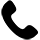

<footer>
    <!--Section 1 : Logo de la ville et liens Réseaux sociaux-->
    <section class="logoville">
        <a href="../ville-marseille/marseille.html"></a>
    </section>
    <div class="reseauxsociaux">
        <ul>
            <a href="https://fr-fr.facebook.com/marseilleville/"></a>
            <a href="https://twitter.com/Villemarseille"></a>
            <a href="https://www.instagram.com/villemarseille/"></a>
            <a href="https://fr.linkedin.com/company/ville-de-marseille"></a>
        </ul>  
    </div>
    <!--Section 2 : Liens et contacts Hôtel de ville--> 
    <section class="Hôteldeville">
        <h3>Hôtel de ville</h3>
        <p class="htvempl">Place Villeneuve de Bargemon<br>13002 Marseille</p></section>
        <div class="contact">
        <a href="https://www.marseille.fr/mairie/services-de-proximit%C3%A9/all%C3%B4-mairie">04 91 55 11 11</a></div>
        <div class="contact">
        <a href="https://www.marseille.fr/mairie/services-de-proximite/nous-ecrire">Nous écrire</a></div>
        <div class="contact">
        <a href="mailto: webmestre@marseille.fr" >Nous contacter</a></div>
        <div class="contact">
        <a href="https://app.acce-o.fr/client/marseille">Accessibilité</a></div>
    <!--Section 3 : Liens vers sites associés-->
    <section class="Sitesassociés">
        <div class="sites">
        <a href="https://www.marseille.fr/">Site officiel de la Ville de Marseille</a></div>
        <div class="sites">
        <a href="https://www.rtm.fr/carte-transport">RTM</a></div>
        <div class="sites">
        <a href="https://www.marseille-tourisme.com/">Office du tourisme</a></section></div>
</footer>